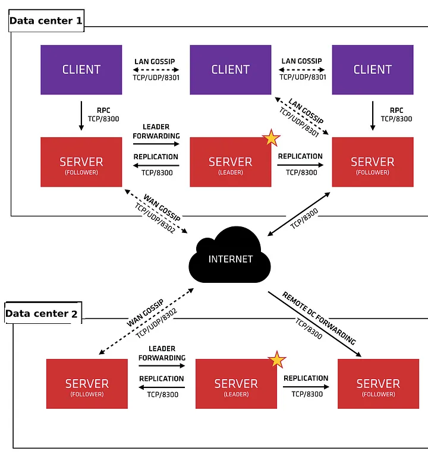
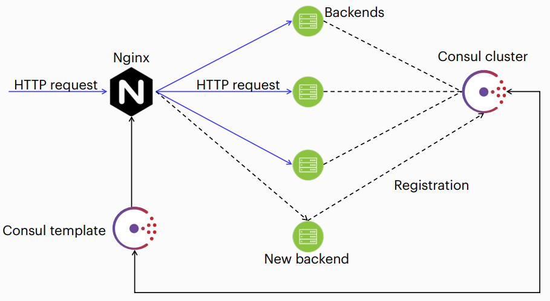
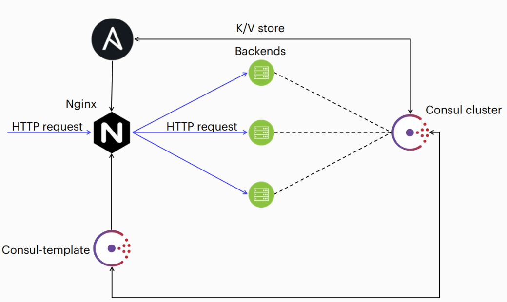
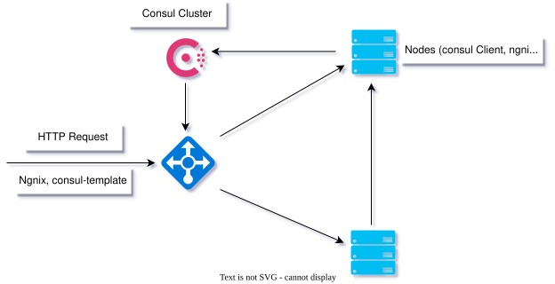

Consul provides feature such as:
-
Service discovery
-
Tagging
-
Health checks
-
Secure Service Communication
-
Multi Datacenter
-
System-wide key/value storage

Server vs Client
Server:
running on individual machine
form a failsafe cluster
communicating with client machine
Client:
working on machine were running service
checking health of server
sending information on server
example config registration service
`{ "service":{"name": "web", "tags":["be"], "port": 80,"check":{"args": ["curl", "localhost"], "interval": "10s" }}}`
Instal consul
create account consul
useradd -s /bin/false -m consul
download binar file https://developer.hashicorp.com/consul/downloads for ubuntu
for example
https://releases.hashicorp.com/consul/1.10.3/consul_1.10.3_linux_amd64.zip
unzip
unzip consul_1.10.3_linux_amd64.zip.
Then move the file to ~/bin.
cp consul ~/bin/
After this, add the directory with the binary file to $PATH. For this you need
open ~/.bashrc and add the line
export PATH=$PATH:~/bin.
As a result, you will be able to call Consul from the command line by typing
consul
Option2:
wget -O- https://apt.releases.hashicorp.com/gpg | sudo gpg --dearmor -o /usr/share/keyrings/hashicorp-archive-keyring.gpg
echo "deb [signed-by=/usr/share/keyrings/hashicorp-archive-keyring.gpg] https://apt.releases.hashicorp.com $(lsb_release -cs) main" | sudo tee /etc/apt/sources.list.d/hashicorp.list
sudo apt update && sudo apt install consul
for fix
sudo apt install software-properties-common
curl -fsSL https://apt.releases.hashicorp.com/gpg | sudo apt-key add -
sudo apt-add-repository "deb [arch=amd64] https://apt.releases.hashicorp.com $(lsb_release -cs) main"
sudo apt-get update && sudo apt-get install consul
test:
consul
see status of service
systemctl status consul
see config of consul service
cat /lib/systemd/system/consul.service
Agents Configuration File Reference
cd /etc/consul.d
nano consul.hcl
datacenter = "dc"
server = true
data_dir = "/opt/consul"
client_addr = "192.168.0.1 127.0.0.1"
bootstrap_expect = 3
bind_addr = "192.168.0.1"
encrypt = "8kKJSxjc6Hs7w5Qi/1ojxs2OPeZTnGskAIpZ2GRw4Eo="
server = true -work like server false work like client
client_addr = "192.168.0.1 127.0.0.1" ip of server and 127.0.0.1 need for cli
bind_addr my ip address
bootstrap_expect = 3 min 3 servers
encrypt = "8kKJSxjc6Hs7w5Qi/1ojxs2OPeZTnGskAIpZ2GRw4Eo=" its key for consul need generate first
Generate key consul
consul keygen
Useful commands
consul validate /etc/consul.d/consul.hcl - checking the agent config
consul join <IP address or node name> — join to cluster, new member
consul leave — exclude a node from the cluster
consul maint -enable — enable service mode on the node
consul maint -disable — return to working mode from maintenance mode
consul members — show cluster members
consul info — general information about the cluster
consul reload — reread the agent configuration
consul catalog services — show a list of registered services in the cluster
consul register backend.json — register the service described in the fe.json file
consul deregister backend.json — deregister the service described in the fe.json file
Configuratin Client of Consul
nano /etc/consul.d/consul.hcl
data_dir = "/opt/consul"
client_addr = "192.168.0.4 127.0.0.1"
bind_addr = "192.168.0.4"
encrypt = "8kKJSxjc6Hs7w5Qi/1ojxs2OPeZTnGskAIpZ2GRw4Eo="
enable_local_script_checks = true
enable_local_script_checks = true enable check scripts to work service online
start consul
systemctl start consul
Config json script
in /etc/consul.d create new file backend.json
"service":
{ "name": "be",
"tags": [ "be" ],
"check":
{
"id": "NGINX",
"name": "Test check",
"http": "http://localhost",
"method": "GET",
"interval": "10s",
"timeout": "1s"
}
}
}
for test
{ "service": { "name": "be", "tags": [ "be" ], "port":
80, "check": { "args": [ "curl", "localhost" ],
"interval": "10s" } } }
DNS Interface
Get information about a node:
dig @127.0.0.1 -p 8600 client.node.consul # <node>.node[.datacenter].<domain>
dig @127.0.0.1 -p 8600 vm-9918226g.node.consul
Get information about a services:
dig @127.0.0.1 -p8600 be.service.consul # [tag.]<service>.service[.datacenter].<domain>
More details about the service:
dig @127.0.0.1 -p8600 be.service.consul SRV
HTTP API
Show nodes in cluster"
curl http://localhost:8500/v1/catalog/nodes?pretty
Show services in cluster
curl http://127.0.0.1:8500/v1/catalog/services
Show node vm-cb4c04f2 status
curl http://127.0.0.1:8500/v1/health/node/vm-cb4c04f2?pretty
Show status serivce on local node backend
curl http://localhost:8500/v1/agent/health/service/name/backend?pretty
?pretty format json
UI Config enable
graphic interface
nano /etc/consul.d/consul.hcl
ui_config{
enabled=true
}
need create tunnel for virtual machine
ssh -L 8500:localhost:8500 root@<ip_of_machine>
after goto 127.0.0.1:8500/ui
Consul Template
install on new machine
apt install software-properties-common
curl -fsSL https://apt.releases.hashicorp.com/gpg | sudo apt-key add -
apt-add-repository "deb [arch=amd64] https://apt.releases.hashicorp.com $(lsb_release -cs) main"
apt-get update && sudo apt-get install consul-template
mkdir /etc/consul-template.d/
chown -R consul:consul /etc/consul-template.d
Create for Consul Template Systemd Unit

The deb package does not have a consul template start/stop service, need to create it in yourself.
create service file
nano /usr/lib/systemd/system/consul-template.service
copy && past
[Unit]
Description=Consul-Template Daemon
Documentation=https://github.com/hashicorp/consul-template/
Wants=basic.target
After=network.target
[Service]
User=consul
Group=consul
ExecStart=/usr/bin/consul-template -config=/etc/consul-template.d/
SuccessExitStatus=12
ExecReload=/bin/kill -HUP $MAINPID
KillSignal=SIGINT
KillMode=process
Restart=on-failure
RestartSec=42s
LimitNOFILE=4096
[Install]
WantedBy=multi-user.target
Work with key-value storage
add mykey value 5
curl -X PUT -d 5 http://127.0.0.1:8500/v1/kv/mykey
or
consul kv put mykey 5
get value mykey (get in base64 crypt)
curl -X GET http://127.0.0.1:8500/v1/kv/mykey
uncrypt key
echo '<base64>' | base65 -d
or
consul kv get mykey
Requests to the consul from the Consul-template
requests in catalog
{{ service "<TAG>.<NAME>@<DATACENTER>~<NEAR>|<FILTER>" }}
-
TAG - tag of service, optional parametr
-
NAME - name of service, required parameter
-
DATACENTER - name of data server, optional parametr
-
NEAR - order output by shortest path to the specified node, if not specified, the result will be in lexicographic order, optional parameter.
-
FILTER — filtering nodes by state, optional parameter. Possible values: any, passing, warning
{{ services "@<DATACENTER>" }}
- DATACENTER — data center where the requested all services in catalog
Language constructs for templates
template
{{ range service "be" }}
server {{ .Name }} {{ .Address }}:{{ .Port }}
{{ end }}
server be01 192.168.0.4
{{range service “be”}}
server {{ .Name }} {{ .Address }}:{{ .Port }}
{{else}}
server 192.168.0.100
{{end}}
Requests to Requests to KV storage
{{ key "<PATH>@<DATACENTER>" }}
{{ keyExists "<PATH>@<DATACENTER>" }}
{{ keyOrDefault "<PATH>@<DATACENTER>" "<DEFAULT>" }}
-
PATH - path to the key, for example, service/redis/maxconns
-
DATACENTER - data center, if not specified, the local one will be used
-
DEFAULT - default value if key does not exist
language constructs for templates
{{ if keyExists "nginx/mykey" }}
# ...
{{ else }}
# ...
{{ end }}
location /location/ {
{{ if keyExists (printf "balancer/internal/%s" (env "HOST")) }}
proxy_pass http://{{ keyOrDefault "mapping/internal" "internal" }}/;
{{ end }}
}
Inventory files

on ansible machine edit consul.inv
consul.inv
[consul_instances]
192.168.0.1 consul_bind_address=192.168.0.1 consul_client_address="192.168.0.1 127.0.0.1" \
consul_node_role=server consul_bootstrap_expect=true
192.168.0.2 consul_bind_address=192.168.0.2 consul_client_address="192.168.0.2 127.0.0.1" \
consul_node_role=server consul_bootstrap_expect=true
192.168.0.3 consul_bind_address=192.168.0.3 consul_client_address="192.168.0.3 127.0.0.1" \
consul_node_role=server consul_bootstrap_expect=true
192.168.0.4 consul_bind_address=192.168.0.4 consul_client_address="192.168.0.4 127.0.0.1" \
consul_node_role=client consul_enable_local_script_checks=true
192.168.0.6 consul_bind_address=192.168.0.6 consul_client_address="192.168.0.6 127.0.0.1" \
consul_node_role=client
[nginx]
192.168.0.4
192.168.0.6
ansible file edit site.yml
- name: Assemble Consul cluster
hosts: consul_instances
any_errors_fatal: true
become: true
become_user: root
roles:
- ansible-consul
- name: Consul client and service
hosts: 192.168.0.4
vars_files:
- consul_services.yaml
any_errors_fatal: true
become: true
become_user: root
roles:
- ansible-consul
- name: Install Nginx
hosts: nginx
become: true
become_user: root
roles:
- ansible-role-nginx
run
ansible-playbook -i consul.inv site.yaml
after need install on consul-template machine file consul-template-config.json
configurate file consul-template-config.json for consul-template
need add to /etc/consul-template.d/consul-template-config.json
nano `consul-template-config.json`
in file:
consul {
address = "localhost:8500"
retry {
enabled = true
attempts = 12
backoff = "250ms"
}
}
template {
source = "/etc/nginx/conf.d/load-balancer.conf.ctmpl"
destination = "/etc/nginx/conf.d/load-balancer.conf"
perms = 0600
command = "nginx -s reload"
}
Template Jinja2 Nginx for Ansible
on ansible machine need download in ./asnisble_playbook/roles/
clone https://github.com/nginxinc/ansible-role-nginx.git
cd ansible-role-nginx-config
need add to/roles/ansible-role-nginx-config/templates/stream/load-balancer.conf.ctmpl.j2.
nano /templates/stream/load-balancer.conf.ctmpl.j2
template jinja2
{% if backend is defined %}
upstream {{ backend }} {
server 127.0.0.1:8080;
}
{% else %}
upstream python {
{{'{{'}}- range service "{{ servicename }}" {{'}}'}}
server {{'{{'}} .Address {{'}}'}};
{{'{{'}}- end {{'}}'}}
}
{% endif %}
server {
listen 80;
location / {
{% if backend is defined %}
proxy_pass http://{{ backend }};
{% else %}
proxy_pass http://python;
{% endif %}
}
}
Algorithm generate template
Create playbook for ansible nginx-consul-template-ansible.yaml in directory ~/asnible_playbooks/roles
nano nginx-consul-template-ansible.yaml
---
# Playbook for configuring Nginx as a load balancer for consul-template
- name: Configuring Nginx
hosts: 192.168.0.6
become: true
become_user: root
tasks:
- name: Getting backend name from consul KV storage
delegate_to: 127.0.0.1
ignore_errors: yes
set_fact:
backend: "{{ lookup('consul_kv', 'backend', host='192.168.0.6') }}"
when: backend | length > 0
- name: Configure Nginx for consul-template
include_role:
name: ansible-role-nginx-config
vars:
servicename: backend
nginx_config_stream_template_enable: true
nginx_config_stream_template:
- template_file: stream/load-balancer.conf.ctmpl.j2
conf_file_name: load-balancer.conf.ctmpl
conf_file_location: /etc/nginx/conf.d
nginx_config_cleanup: true
nginx_config_cleanup_paths:
- directory:
- /etc/nginx/conf.d
- /etc/nginx/sites-enabled
recurse: false
nginx_config_cleanup_files:
- /etc/nginx/conf.d/default.conf
- /etc/nginx/sites-enabled/000-default
run
ansible-playbook -i consul.inv nginx-consul-template-ansible.yaml
in consul-template machine /etc/nginx/conf.d/load-balance.conf.ctmpl`
see if automatic create template file
cat load-balance.conf.ctmpl
run consul temlate
systemctl start consul-temlate
after it you can see automaticly create file for nginx /etc/nginx/loadbalance.conf
see if Nginx run
systemcl status nginx
test if nginx running
curl 127.0.0.1
see logs on client if all running
tail /var/logs/nginx/access.log
cluster 3

on ansible machine
init consul (create role consul)
ansible-galaxy init consul
after go to cd roles/consul/tasks/ and create new file main.yml
nano main.yml
copy && past:
---
# tasks file for consul
- name: Install auxiliary applications
apt:
name:
- software-properties-common
- python3
- python3-pip
- python-setuptools
update_cache: yes
- name: install python-consul for ansible searching plugin
run_once: true
delegate_to: 192.168.0.4
pip:
name: python_consul
executable: pip3
- name: Install consul GPG key
apt_key:
url: https://apt.release.hashicorp.com/gpg
keyring: /etc/apt/trusted.gpg.d/hashicorp.gpg
state: present
- name: add consul official repository
apt_repository:
repo: deb [arc=amd64 signed-by=/etc/apt/trusted.gpg.d/hashicorp.gpg] https://apt.releases.hasicorp.com focal main
- name: Install consul
apt:
name: consul
update_cache: yes
- name: Install consul-template
run_once: true
delegate_to: 192.168.0.4
apt:
name: consule-template
- name: Copy systemd file or consul-template
run_once: true
delegate_to: 192.168.0.4
copy:
scr: consul-template.service
dest: /usr/lib/systemd/system/
owner: root
group: root
- name: create directory for consul-template config
run_once: true
delegate_to: 192.168.0.4
file:
path: /etc/consul-template.d/
owner: consul
group: consul
state: directory
- name: copy consul-template config
run_once: true
delegate_to: 192.168.0.4
copy:
scr: consul-template.json
dest: /etc/consul-template.d/
owner: consul
group: consul
after create new file site.yml
nano site.yml
copy && past\
---
# File: site.yml - Example Consul site playbook
- name: Install consul
hosts: consul_instances
roles:
- consul
- name: Assemble Consul cluster
hosts: consul instances
any_errors_fatal: true
become: true
become_user: root
roles:
- ansible-consul
- name: Install Nginx
hosts: 192.168.0.5
vars_files:
- consul_services_v1.yaml
any_errors_fatal: true
become: true
become_user: root
roles:
- ansible-consul
- name: Install Nginx
hosts: 192.168.0.6
vars_files:
- consul_services_v2.yaml
any_errors_fatal: true
become: true
become_user: root
roles:
- ansible-consul
Clone Ansible-console to Ansible
clone to /ansible_playbooks/roles/
git clone https://github.com/ansible-community/ansible-consul.git
Create Services
create consule_services_v1.yaml
---
consul_services:
- name: "be_version_v1"
id: "web server v1"
tags: ['bev1']
checks:
- { name: 'Check Nginx availability', id: 'Nginx'. http://127.0.0.1', method: 'GET', interval: '10s', timeout: '1s' }
create consule_services_v2.yaml
---
consul_services:
- name: "be_version_v2"
id: "web server v2"
tags: ['bev2']
checks:
- { name: 'Check Nginx availability', id: 'Nginx'. http://127.0.0.1', method: 'GET', interval: '10s', timeout: '1s' }
consule-template.json config
https://github.com/hashicorp/consul-template/blob/main/docs/templating-language.md#service
need create consul-template.json and consul-template.service in /ansible-playbooks/roles/consul/files/
consul-template.json
consul {
address: = "localhost:8500"
retry {
enable = true
attempts = 12
backoff = "250ms"
}
}
template {
source = "/etc/nginx/conf.d/load-balancer.conf.tmp"
destination = "/etc/nginx/conf.d/load-balancer.conf"
perms = 0600
command = "nginx -s reload"
}
consule-template.service
[Unit]
Description=Consul-Template Daemon
Documentation=https://github.com/hashicorp/consul-template/
Wants=basic.target
After=network.target
[Service]
User=consul
Group=consul
ExecStart=/usr/bin/consul-template -config=/etc/consul-template.d/
SuccessExitStatus=12
ExecReload=/bin/kill -HUP $MAINPID
KillSignal=SIGINT
KillMode=process
Restart=on-failure
RestartSec=42s
LimitNOFILE=4096
[Install]
WantedBy=multi-user.target
Inventory File
now need inventory file consul.inv create in directory /ansibe-playbooks/
consul.inv
[consul_instances]
192.168.0.1 consul_bind_address=192.168.0.1 consul_client_address="192.168.0.1 127.0.0.1" consul_node_role=server consul_bootstrap_expect=true
192.168.0.2 consul_bind_address=192.168.0.2 consul_client_address="192.168.0.2 127.0.0.1" consul_node_role=server consul_bootstrap_expect=true
192.168.0.3 consul_bind_address=192.168.0.3 consul_client_address="192.168.0.3127.0.0.1" consul_node_role=server consul_bootstrap_expect=true
192.168.0.4 consul_bind_address=192.168.0.4 consul_client_address="192.168.0.4 127.0.0.1" consul_node_role=client consul_enable_local_script_checks=false
192.168.0.5 consul_bind_address=192.168.0.4 consul_client_address="192.168.0.5 127.0.0.1" consul_node_role=client consul_enable_local_script_checks=true
192.168.0.6 consul_bind_address=192.168.0.4 consul_client_address="192.168.0.6 127.0.0.1" consul_node_role=client consul_enable_local_script_checks=true
[consul_template]
192.168.0.4
[nginx]
192.168.0.4
192.168.0.5
192.168.0.6
[backend]
192.168.0.5
192.168.0.6
now run playbook
ansible-playbook -i consul.inv site.yml
Configuration Nginx
download role to /ansible-playbooks/roles/
clone
git clone https://github.com/nginxinc/ansible-role-nginx.git
create new file config_nginx.yml
---
-name: Configuring Nginx
hosts: consul_template
become: true
become_user: root
tasks:
- name: Getting backend name from consul KV storage
set_fact:
version: "{{ lookup('consul_kv', 'version', host='192.168.0.4') | default('v2', true) }}"
- name: print version
debug:
msg: "version= {{ version }}"
- name: Configure Nginx for consul-template
include_role:
name: ansible-role-nginx-config
vars:
nginx_config_stream_template_enable: true
nginx_config_stream_template:
- template_file: stream/load-balancer.conf.tmp.j2
conf_file_name: load-balancer.conf.tmp
conf_file_location:: /etc/nginx/conf.d
ngnix_config_cleanup: true
ngnix_config_cleanup_paths:
- directory:
- /etc/nginx/conf.d
- /etc/nginx/sites-enabled
recurse: false
ngnix_config_cleanup_files:
- /etc/nginx/conf.d/default.conf
- /etc/nginx/sites-enabled/000-default
Ansible Role Ngnix Config
/roles/ansible-role-nginx-config/templates/stream/load-balancer.conf.tmp.js
{% if version is defined %}
{% if version == "v1" %}
upsteam be_version_v1 {
{{'{{'}}- range service "be_version_v1" {{'}}'}}
server {{'{{'}} .Address {{'}}'}};
{{'{{'}}- end {{'}}'}}
}
{% elif version == "v2" %}
upsteam be_version_v2 {
{{'{{'}}- range service "be_version_v2 {{'}}'}}
server {{'{{'}} .Address {{'}}'}};
{{'{{'}}- end {{'}}'}}
}
{% endif %}
{% endif %}
server {
listen 80;
{% if version is defined %}
{% if version == "v1" %}
location /v1/ {
proxy_pass http://be_version_v1;
}
{% elif version == "v2" %}
location /v2/ {
proxy_pass http://be_version_v2;
}
}
{% endif %}
{% endif %}
run
ansible-playbook -i consul.inv configure-nginx.yml
Load Balance
on machine loadbalance
cd /etc/nginx/conf.d/
cat load-balancer.conf.tmp
get key value
consul kv get version
put version
consul kv put version v1
/etc/ngnix/conf.d/ use cat load-balancer.conf.tmp
{{ $keyname := keyOrDefault "version" "v2" }}
{{ $service name := printf "be_version_%s" $keyname }}
upstream {{ $service name }} {
{{- range service $service_name }}
service {{ .Address }};
{{- end }}
}
server {
listen 80;
localion /{{ $keyname }}/ {
proxy_pass http://{{ $service_name }};
}
}
start consul-template
systemctl start consul-template